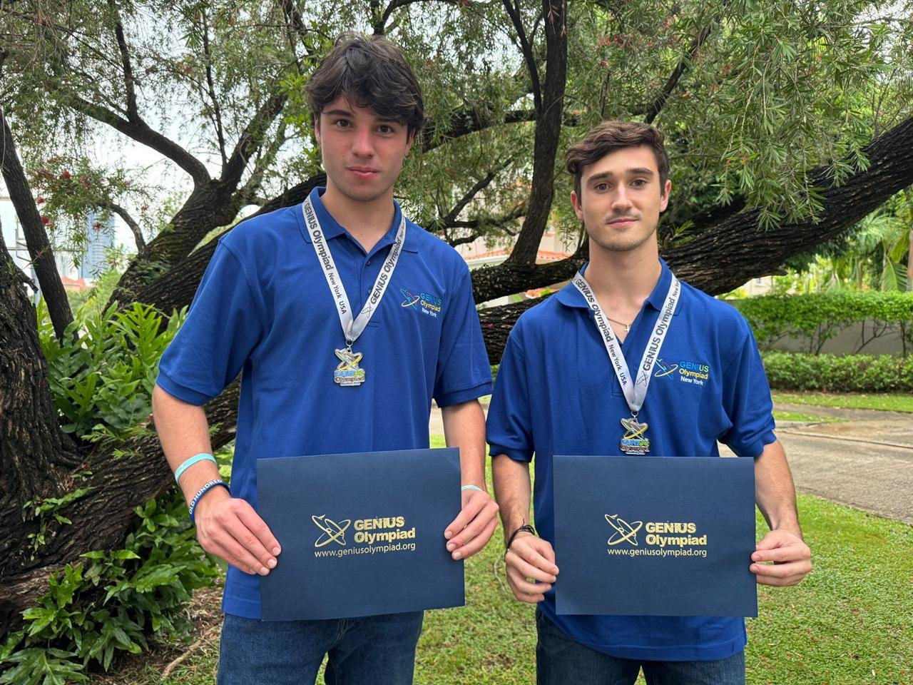
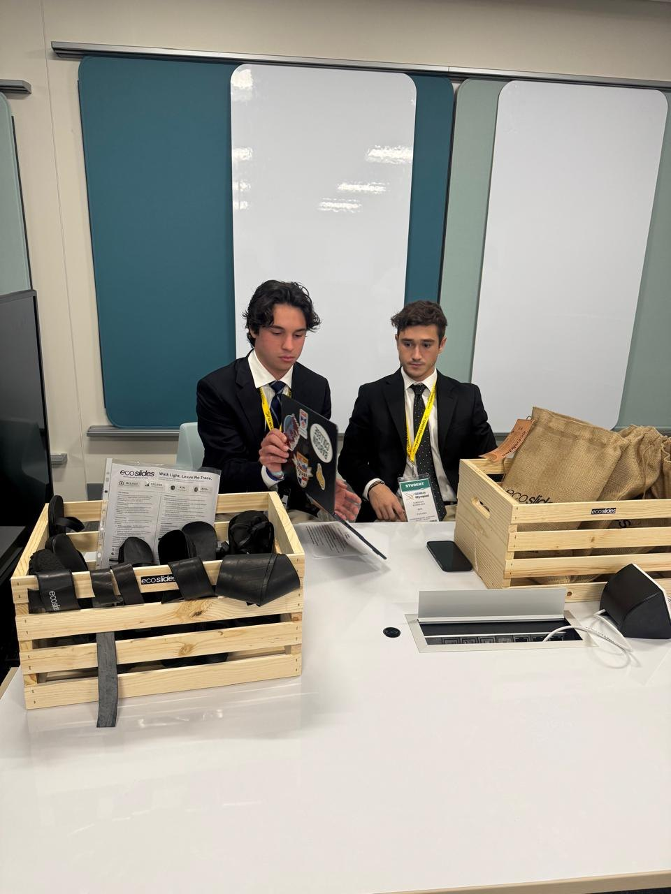
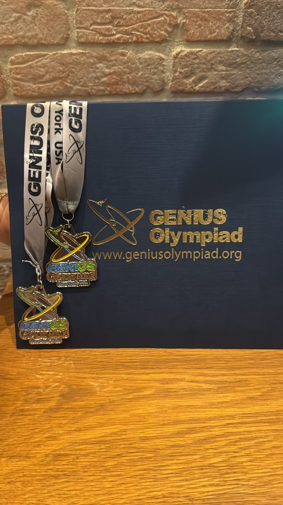

2026
GENIUS Olympiad
Medalla de Plata
Reconocimiento en la categoría de emprendimiento por nuestro proyecto de calzado elaborado con llantas recicladas.
Rochester, New York
ECOSLIDESPTY · NUESTRA TRAYECTORIA
Las experiencias y los reconocimientos que forman parte de nuestra historia, dentro y fuera de Panamá.
TALENTO PANAMEÑO EN ESCENARIOS INTERNACIONALES
Una idea nacida en Panamá, presentada en escenarios internacionales.


Medalla de Plata
Reconocimiento en la categoría de emprendimiento por nuestro proyecto de calzado elaborado con llantas recicladas.
Rochester, New York
Conrad Innovator Distinction
Distinción por nuestra propuesta de innovación ambiental, que transforma llantas descartadas en calzado.
Energía y medioambiente · Temporada 2025–2026
Ver lista oficial de Conrad ↗
NUESTRA HISTORIA, EN VOZ PROPIA
Conoce las ideas, las personas y el propósito detrás de cada paso. Te invitamos a ver nuestras entrevistas.